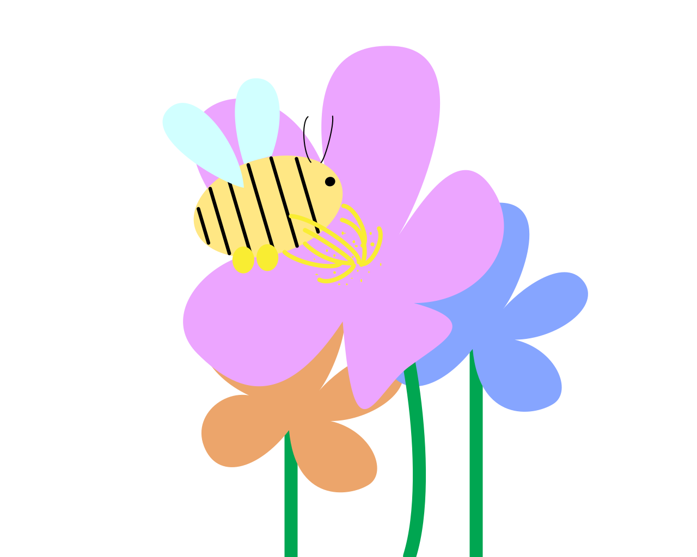

Une abeille est capable à elle seule de butiner (récupérer le nectar) de 250 fleurs par heure, de stocker sur une seule patte 500 000 grains de pollen. Parmis 100 espèces de plantes faisant partie de nos ressources alimentaires, elle en pollinise à elle seule 71. En effet, la liste de ces cultures est très étendue. Des légumes: ail, asperge, aubergine, oignon, betterave…
Et des fruits,: amande, pêche, poire, pomme, prune, raisin, fraise … Si l’abeille n’existe plus, on ne pourra plus manger ces fruits et légumes. Aussi, plus elle butine les fleurs, plus les arbres produiront des fruits de bonne qualité et en bonne quantité. Une fleur mal pollinisée donnera un fruit de mauvaise qualité